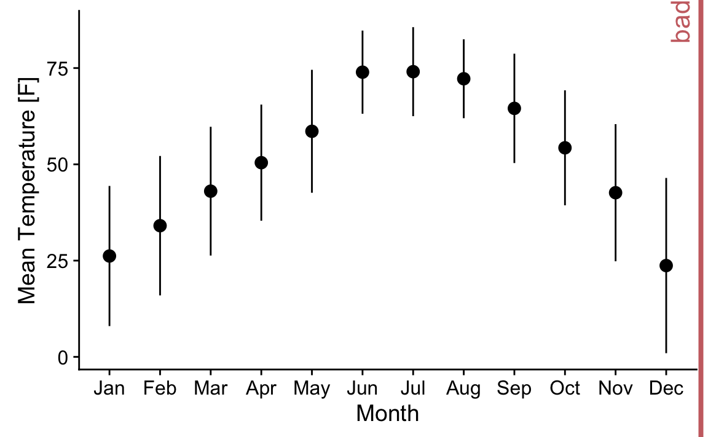
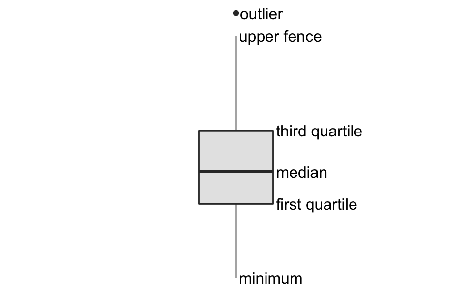
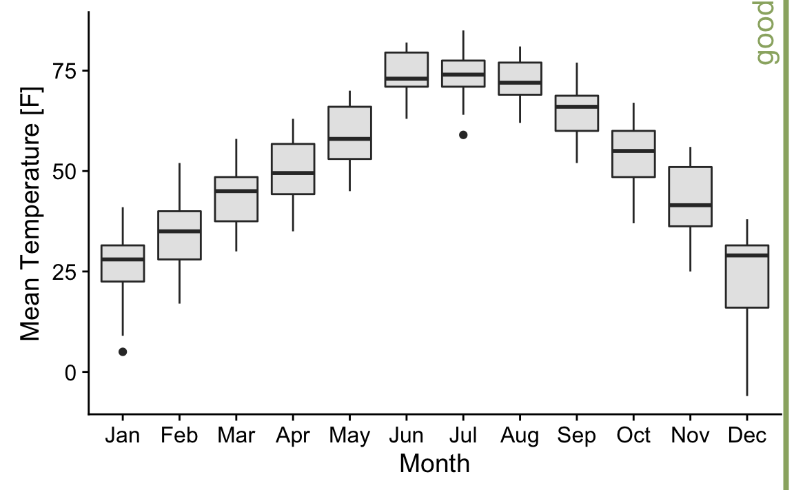
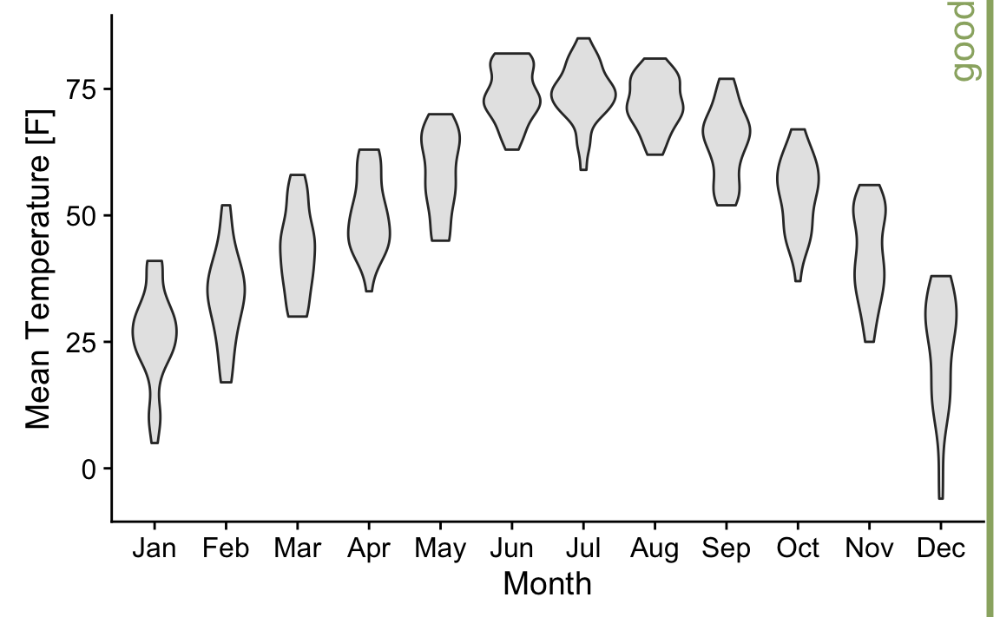
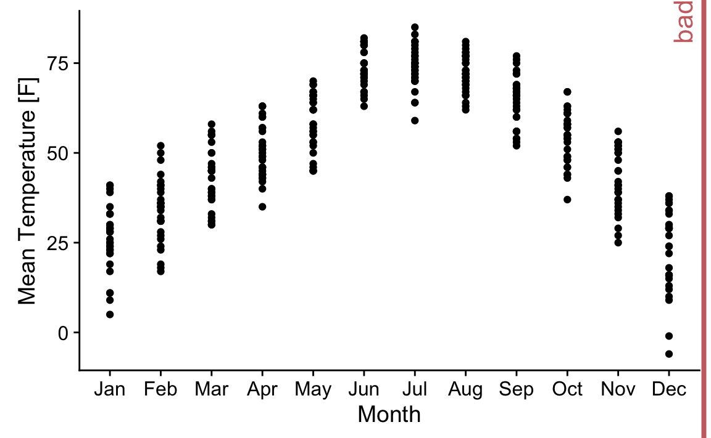
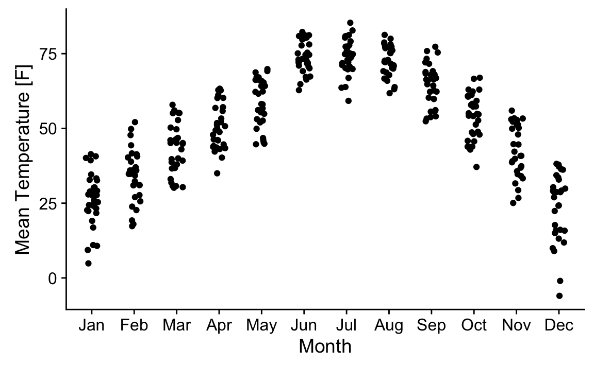
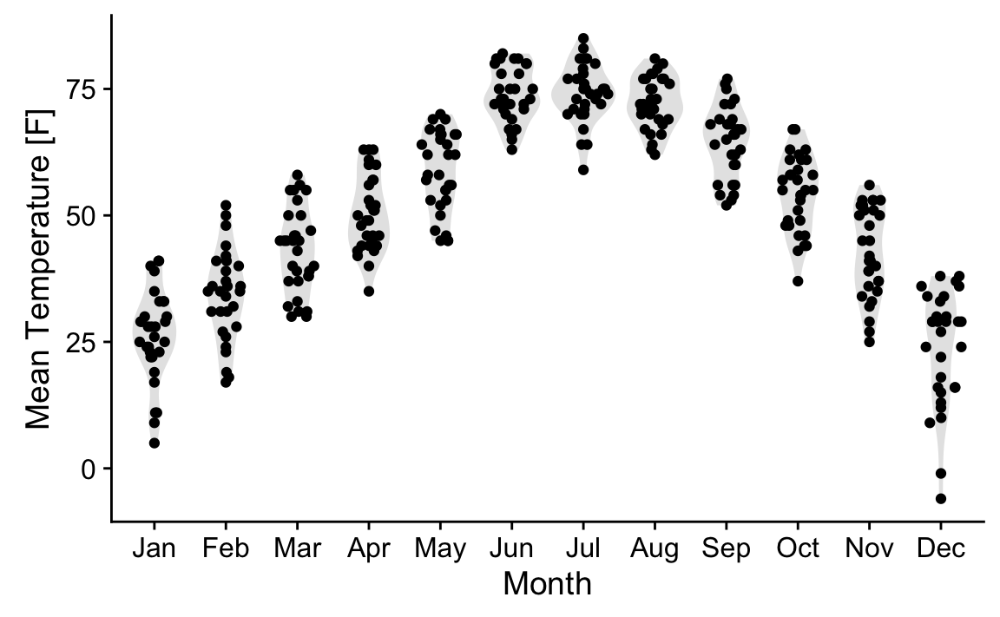

12 Boxplots, violin plots, and more
We commonly have to visualize multiple distributions at the same time. For example, consider weather data. We have observations for each day in a month, possibly at multiple time points or multiple locations, but we frequently are interested in the broader trends, such as how temperature changes with month.
The following figure visualizes temperature data collected in Lincoln, Nebraska in 2016. The dataset contains the mean temperature for each day of the year. We could plot this dataset by calculating the average mean temperature in each month and plotting it as points with error bars.

However, there are multiple problems with this approach. First, we’re losing a lot of information about the data. Second, it’s not necessarily clear what the points represent. Third, it’s definitely not clear what the errorbars represent. There is no standard. Do they represent the standard deviation of the data, the standard error of the mean, a 95% confidence interval, or something else altogether? (I’m here plotting twice the standard deviation, to indicate the range that contains approximately 95% of the data.) Fourth, symmetric error bars are misleading if there is any skew in the data, which is the case here and almost always for real-world datasets.
A traditional and commonly used method of visualizing key parameters of distributions is the boxplot. The boxplot divides the data into quartiles and visualizes them in a standardized manner. 
The line in the middle represents the median, and the box encloses the middle 50% of the data. The top and bottom wiskers extend either to the maximum and minimum of the data, respectively, or to 1.5 times the height of the box, whichever yields the shorter wisker. When the wiskers extend to 1.5 times the height of the box, they are called the upper and lower fence, respectively. Individual data points that fall beyond the upper or lower fence are referred to as outliers and usually showns as individual dots.
When we visualize the temperature dataset using boxplots, we obtain the following result. 
Using the boxplot visualization, we see clearly that temperature is highly skewed in December (most days are moderately cold, and a few are extremely cold) and not very skewed at all in some other months, e.g., July.

We can also plot all individual points: 

Finally, we can combine the best of both worlds and spread the dots out in proportion to the number of points with a similar y coordinate. This methods yields the sina plot, which shows each individual dot while also visualizing the distributions. 